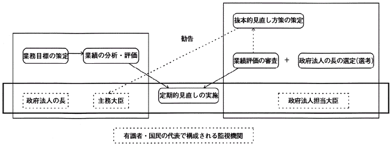

別紙３
監視機能を充実させるための仕組みの例示（イメージ図）

○ 次のような仕組みを構築することも一案。
（ａ）業務目標の策定、業績の分析・評価は、主務大臣、政府法人の長等が実施。
（ｂ）政府法人の長の選定（選考）、業績評価の審査、その結果に基づく組織形態の見直しを含む業務見直し状況の監視を担当する行政組織（その所管大臣を「政府法人担当大臣」と仮称）を設置（注）。なお、政府法人の長の選定（選考）過程や業績評価の審査結果などは公表。
（注）
１．
政府法人の活動を横断的に総合調整する部局。その在り方については中央省庁の再編の中で検討されるべき。
２．
政府法人の長に関する人事権については主務大臣が一定の権限を持つ必要があるものの、そのうち、その選定（選考）にかかわる権限を主務大臣から切り離すことが可能かどうかを含め、主務大臣・政府法人担当大臣の責任の在り方について、法的検討が必要。
（c）中期業務目標の区切り毎に、主務大臣、政府法人担当大臣等からなる見直し実施チームを編成。業績評価の審査結果等に基づき業務の抜本的見直しのための方策について検討・協議（その過程・結果を公表。）。ただし、業績評価の審査結果等で重大な制度的問題が指摘された場合、政府法人担当大臣は、主務大臣とは独立して、組織形態の見直しを含む抜本的見直し方策を検討の上、勧告。
（ｄ）有識者や国民の代表で構成される監視機関を設けることも考えられる（この場合、当該構成メンバーの責任の所在を明確化する必要。）
戻る